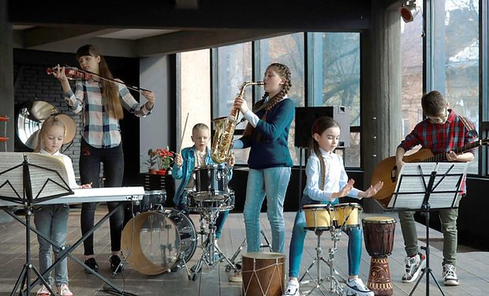
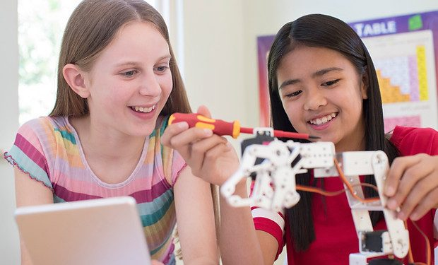
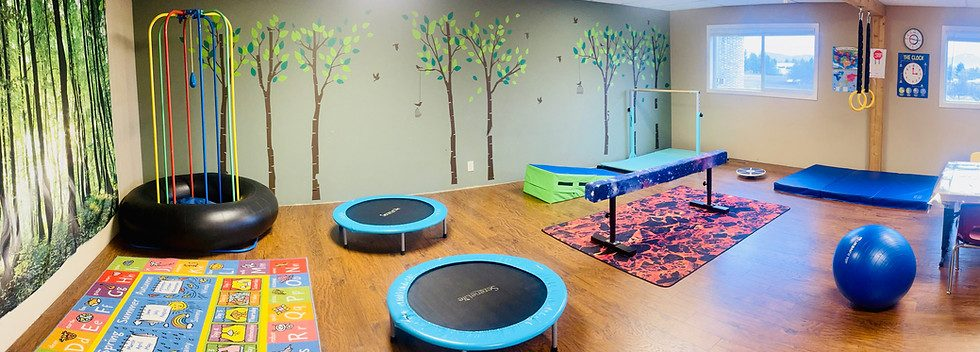

River Tech School of Performing Arts & Technology is the living proof of the concept — the first licensed operator, running the full model since February 2021. Seventy-five students, K through 12, six productions in four years, and a community that answered when the building burned.

Music class at the flagship — the Performing Arts pillar in daily operation.
At a glance.
The flagship school is operated by Faithful Five Inc. under a concept license from River Tech LLC. It is the living example of how the model works on the ground — full-time students alongside à la carte homeschoolers, small classes, daily assembly, annual public productions, and a 1:15 teacher ratio across all three pillars.
Families drive from three counties to attend. Some full-time, some one day a week. Both get a complete program.

What a week looks like.
A full-time student at the flagship runs a 7-period day from 8:30 AM to 2:35 PM. The pillars are interwoven across the week, and the themed à la carte days give homeschool families access to the same teachers and the same program depth.
Monday
Performing Arts intensive. Rehearsal, voice, stagecraft, instrumentation.
Tuesday
Science intensive. Lab work, field observation, applied experiments.
Wednesday
Core academics depth. Math, English, History, Literature, Bible.
Thursday
Life Skills. Home economics, financial literacy, civic practice.
Friday
Technology intensive. Programming, robotics, 3D, film, AI literacy.
Every day
Daily assembly, Bible, chapel weekly. The framework holds the week together.
Six productions in four years.
Every River Tech student takes part in at least one full public musical-theater production per school year. These are not recitals — they are full productions with staging, lighting, live music, and a ticketed public audience.
The Jungle Book
The flagship's first full public production — cast, crew, and live music drawn entirely from the student body.
Annie
A Christmas-season staging. First year of two productions in a single school year.
The Lion King
End-of-year production — ensemble work across all age bands.
The Greatest Showman
A large-ensemble production that doubled as a demonstration of where the Performing Arts pillar had grown to.
Journey to Bethlehem
A Christmas production. Original musical arrangements.
Frozen
The sixth production. Three months before the fire.
Upcoming: Peter Pan & Alice / Aladdin
Two productions currently in development for the 2027 season.
On March 15, 2026, a fire at The River Church destroyed the flagship's classrooms. Instruments, curriculum materials, set and costume stock — everything went in a single night.
The Heart Church (927 E Polston Ave, Post Falls) answered within days. A space agreement was in place, classrooms were set up, and the school resumed on March 30 — fifteen days after the fire. No child missed a semester. No family transferred out.
Life at the school.



See it live.
The flagship has its own website, enrollment process, and tour calendar. River Tech LLC holds the concept; Faithful Five Inc. runs the school. For tours, enrollment, productions, and direct contact with the school, visit rivertechschool.com.